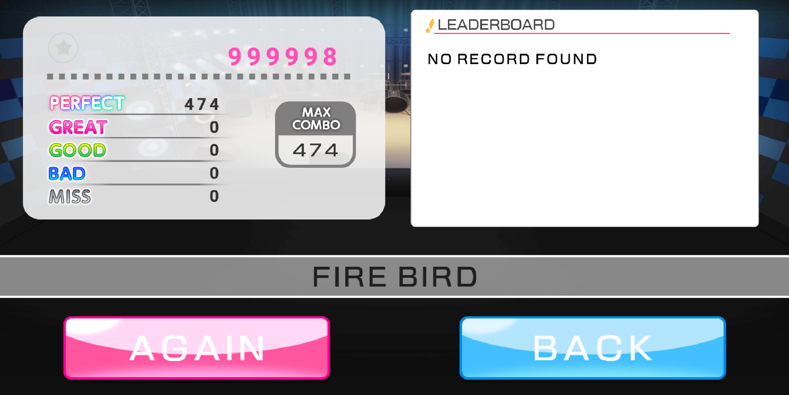
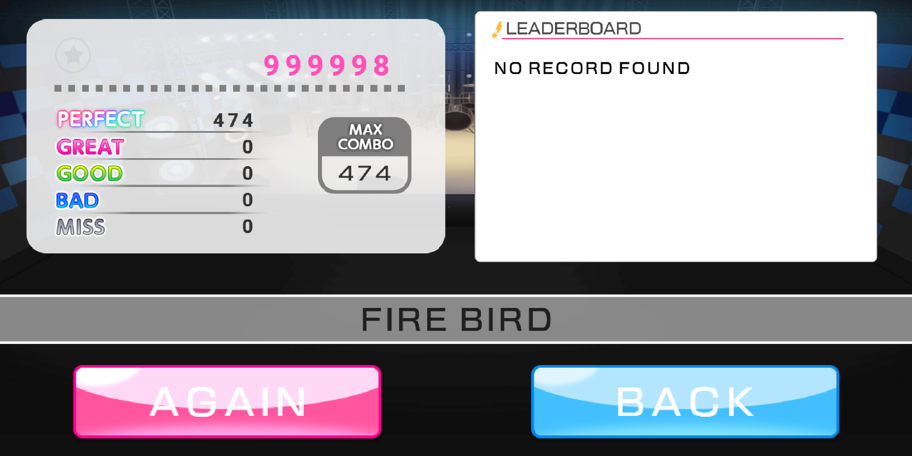

Description
This is a fan-made game. Reference from the mobile game - BanG Dream! Girls Band Party!. Most of the materials are also from BanG Dream! Girls Band Party!
Bandori is a rhythm game with seven scrolling "note highway" to display what notes are to be played. There is a total of three note types: Simply tapping the icon, tapping and holding down the icon and tapping and sliding the icon. The players are tasked to tap notes properly according to the rhythm and type of note in order to receive the score. Depend on the accuracy of the tapping note, there are five levels to affect the score that the player received: Perfect, Great, Good, Bad, and Miss. Bandori starts with a music select menu. The player can select what music they want to play by pressing up and down arrow keys, and by pressing left and right arrow keys to select music difficulty. There are four difficulties for each song: Easy, Normal, Hard, and Expert. After selecting a song, the game will enter to play mode. By pressing ‘S, ‘D’, ‘F’, ‘Space’, ‘J’, ‘K’, ‘L’ keys for following the notes and receive the score. When the current song goes end, the game will enter result mode, it will show the result including score and note accuracy.
About
- Genre: Rhythm
- Platform: PC
- Date: Feb 2021 - April 2021
- Language: C++
- Third-Party: BanGround Player、libpqxx、nlohmann/json
Demo
Features

Generate Notes
- Generate notes from local JSON files.
- Three note types : Single note, Long note and Slide note.
Song Selection Menu
- Load all song files when game opening.
- Every song has 4 difficulties, easy, normal, hard and expert.
- Use up and down keys to select a song and left and right keys to select the difficultt.

Leaderboard
- Connect to online database.
- Display the top 3 score in selected song and difficulty.
- Update the leaderboard if the player gets a new higher record.
Retrospective
What I learned
- Connected the online database using third-party API.
- Reminded myself how to use relational database.
What Went Wrong
- I don't have enough time to polish the particle system.
- The tasks that I original plan were too general, I should plan them more detail.
What Went Well
- Database and leaderboard work well.
- No major modification from the original plan.